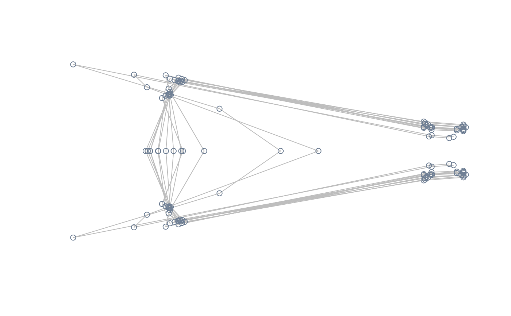
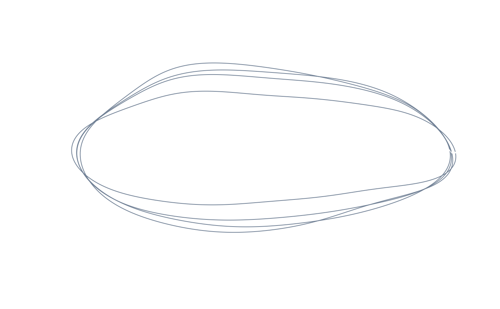

Compute the mean shape from the entire sample, the mean shape of a subset of samples, or the mean shape of the levels of a factor (for landmark configurations).
consensus(shapes, index = NULL)Shape data.
Either a numeric vector indicating the configurations to be averaged or a factor whose levels are used to average groups of configurations.
For landmark data, either a p x k matrix defining a single
mean shape or a p x k x n array containing n mean shapes, one
for each level of index. For Fourier data, a n x (4 x nb.h)matrix of Fourier coefficients (with n being either 1 or the number
of levels of index and nb.h being the number of harmonics
used during elliptic Fourier analysis).
#load tails data and packages
library(Morpho)
library(Momocs)
#>
#> Attaching package: ‘Momocs’
#> The following object is masked _by_ ‘.GlobalEnv’:
#>
#> wings
#> The following objects are masked from ‘package:Morpho’:
#>
#> export, tps2d
#> The following object is masked from ‘package:geomorph’:
#>
#> mosquito
#> The following object is masked from ‘package:morphospace’:
#>
#> wings
#> The following object is masked from ‘package:stats’:
#>
#> filter
data("tails")
shapes <- tails$shapes
#compute and plot mean shape of the entire sample
mshape <- consensus(shapes)
plot(mshape)
lineplot(mshape, tails$links)
#getting mean shape for levels of a factor: compute and plot mean shape of
#each of the 13 species
index <- tails$data$species
sp_mshapes <- consensus(shapes, index = index)
pile_shapes(sp_mshapes, links = tails$links, mshape = FALSE)

#getting mean shape for a subset of specimens: compute and plot mean shape of
#deep-forked species
index <- which(tails$data$type == "DF")
df_mshape <- consensus(shapes, index = index)
plot(df_mshape)
lineplot(df_mshape, tails$links)
#quick demo for Fourier data:
data("shells")
shapes <- shells$shapes
#mean shape of the entire sample
mshape <- consensus(shapes)
plot(inv_efourier(mshape, nb.pts = 200), type = "l")
#mean shape of each of the four species
sp_mshapes <- consensus(shapes, index = shells$data$species)
pile_shapes(sp_mshapes, mshape = FALSE)
